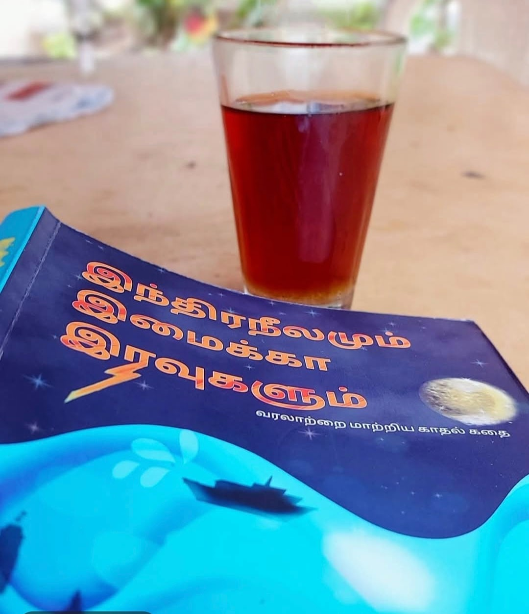

← திரும்பிச் செல்க

[இந்திர நீலமும்
இமைக்கா இரவுகளும்💙
ஆசிரியர் Pratheba C Vigneshன் முதல் படைப்பு இது...
புத்தகத்தின் தலைப்பே படிக்கும் ஆவலை தூண்டியது...
என் வரையில்,
ஒரு புத்தகம் வெறும் காதலை மட்டும் சொன்னால், அது முழுவடையாது...
காதலோடு,
இன்னுமொரு கதை நூலிழையாய் பின்னி ஒரு புத்தகமாகியிருக்க வேண்டும்...
ஒரு வட்டார வழக்கோ,
ஒரு இனத்தின் மறைக்கப்பட்ட அடையாளமோ,
ஏதோ ஒரு பேரழிவோ,
ஏதோ ஒரு பேருதயமோ,
அந்த புத்தகத்தில் வரிகளோடு ஒளிர வேண்டும்...
அப்படியொரு ஒளி ஒன்று,
பூம்புகாரின் கடலில்...
அறியப்படாத வரலாறு ஒன்றை,
ஒளிவீசி எரிகிறது,
இப் புத்தகத்தில்...
காடுகளை மட்டுமே தேடி ஓடிய என்னை,
கடலையும் திரும்பி பார்க்க வைத்தது,
இப் புத்தகம்...
மணிமேகலை என்பவள்,
எங்கோ சிலப்பதிகாரத்தில் ஒரு ஓரமாய் இருந்தாள், நேற்றுவரை எனக்கு...
இன்றோ,
இப் புத்தகத்தால்,
என் அருகே ஆதர்ஷ நாயகி ஆகிவிட்டாள்...
மணிமேகலையிடம் உதயகுமாரன் சொல்கிறான்...
காதலும் ஒரு துறவறம் போல் தான்...
இந்த உலகத்தை விடுவித்துவிடும்...
என்னோடு காதல் துறவறம் கொள்வாயா? மணிமேகலை...
அடடா இவ்வரிகள் தான் எத்தனை ஆழம்...
உதயகுமாரன் மீதான மணிமேகலையின் காதல் உணர்வை,
ஆசிரியர் அத்தனை அழகாக காட்டியுள்ளார்...
கதையின் நாயகி அனன்யா வேறு மணிமேகலை வேறு என நம்ம மறுக்கிறது மனம்...
கடலும்,
பௌணர்மியும்,
இந்திர நீலக்கல்லும்...
மறைந்த ஒரு வரலாற்றை திரையிட்டு காட்டுகிறது...
எங்கோ ஒரு நடுவன்கல்,
உயிர் தியாகம் செய்த ஏதோ ஒரு வீரனுக்கு சாட்சியாய் நிற்கிறது...
ஆனால்,
பூம்புகார் எனும் கடல்பட்டிணம்,
இருந்த அடையாளம் தொலைந்து,
அலையை மட்டும் தள்ளிக் கொண்டு இருக்கிறது...
அங்கு வீசும் உப்புக் காற்றில்,
இன்னும் உணரப்படாத வரலாறு கரைந்து கொண்டு இருக்கிறது...
வழக்கமான நாவலை போல் அல்லாது,
கதைக்குள் ஒரு வரலாற்றை சொல்லி,
நம்மை சிந்தனைக்குள்ளாக்கி,
நமக்குள் பல தேடல்களை விதையிட்டுள்ளார் ஆசிரியர்...
இதில் அவரின் உழைப்பு அலாதியானது...
அவரின் பல வருட தவத்தின் வரமே...
இந்த புத்தகம் எனும் பொக்கிஷம்...
ஒரு தேநீரோடு,
மலையருவி அருகே...
இந்த புத்தகத்துக்குள் கடலில் பயணித்து,
பூம்புகாரின் வரலாற்றை முத்தென எடுத்தேன்...
இதற்காக,
ஆசிரியருக்கு நன்றி...
அவருக்கு இது முதல் படைப்பு என்பது...
நிஜமாகவே நம்ப முடியாத ஒன்று...
அத்தனை சிறப்பாய் படைத்துள்ளார்..
அவரின் திறமைக்கு வாழ்த்துக்கள்...
பழைய பூம்புகாரையும்,
கடல் பயணத்தையும்,
மணிமேகலையையும்,
இந்திர நீலக்கல்லையும்,
அழகான காதலையும், கண்டு கரைய வேண்டுமா?
இந்த புத்தகத்துள் மூழ்குங்கள்🥰💙🥰
]
#இந்திரநீலமும் #இமைக்காஇரவுகளும்